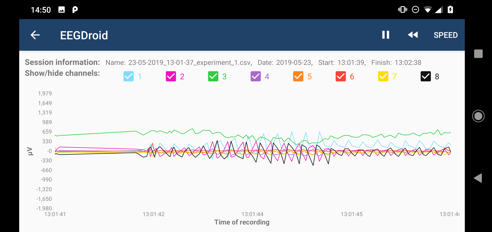

EEG tutorial
Table of contents:
- What is the Traumschreiber?
- What is EEG?
- How EEG works?
- Why is EEG important?
- How can I use the Traumschreiber?
- Bibliography
What is the Traumschreiber?
The Traumschreiber is a mobile EEG device designed by Kristoffer Appel, Johannes Leugering and Gordon Pipa from the University of Osnabrück. Originally it was designed as a sleep mask for research purposes [1,2]. It includes 8 channels that are usable to record EEG, EOG, and EMG.
The usual EEG involves going to a Laboratory or a Hospital and involves an elevated cost for those last ones, on the other hand, this device is characterized for being small, light and easy to use, as well as having a very cheap production cost.
The use of the Traumschreiber is still experimental, however, we have found good evidence about its correct functioning in research data collections and sleep research.

What is EEG?
Electroencephalography, shortened as EEG, it is an electrophysiological monitoring method for the brain. In other words, it is a test used to record the electrical activity of the neurons in the brain. It is noninvasive and requires the use of electrodes placed along the scalp. Those electrodes measure the postsynaptic potentials of the neurons. [3]
How EEG works?
A typical EEG display graphs voltages on the vertical axis and time on the horizontal axis, providing a near real-time display of ongoing cerebral activity.  To record the signals, EEG uses the principle of differential amplification. The recording is made from voltage differences between different points, using a pair of electrodes that compares one active site with another site of reference. Through the measure of differences in electrical potentials are discernible EEG waveforms generated [6].
Why is EEG important?
Why is EEG important? EEG is the most useful diagnostic procedure for Epilepsy. Epilepsy causes abnormalities in the EEG readings, and during a stroke, unusual behavior in the brain signals is recorded [4]. EEG confirms the presence of abnormal electrical activity and gives information regarding the type of seizure disorder and the location of the seizure focus [5]. Epilepsy allows answering the following questions: Does the patient have epilepsy? Where is the epileptogenic zone of the brain? How good is therapy?
How can I use the Traumschreiber?
In the next video, we show you how you can operate the Traumschreiber: how you should put the electrodes in your scalp and how you can take them off after the experiment.
Bibliography
- [1] Appel, K. (2018). The Traumschreiber System: Enabling Crowd-based, Machine Learning-driven, Complex, Polysomnographic Sleep and Dream Experiments.
- [2] Appel, K., & Leugering, J. (2017, January 17). Neuroinformatics - Institute of Cognitive Science.
- [3] Sazgar M., Young M.G. (2019) Overview of EEG, Electrode Placement, and Montages. In: Absolute Epilepsy and EEG Rotation Review. Springer, Cham
- [4] Noachtar, S. & Rémi, J. (2009). The role of EEG in epilepsy: A critical review. Epilepsy & Behavior, 12, 22-23
- [5] Browne, Th. & Holmes, G. (2008). Handbook of Epilepsy (4th edition). Wolters Kluwer
- [6] Britton JW, Frey LC, Hopp JL et al. (2016) Electroencephalography (EEG): An Introductory Text and Atlas of Normal and Abnormal Findings in Adults, Children, and Infants. Chicago: American Epilepsy Society